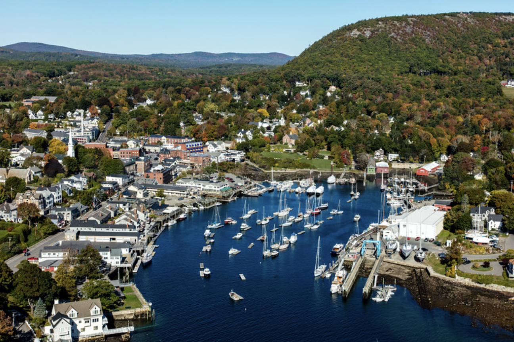
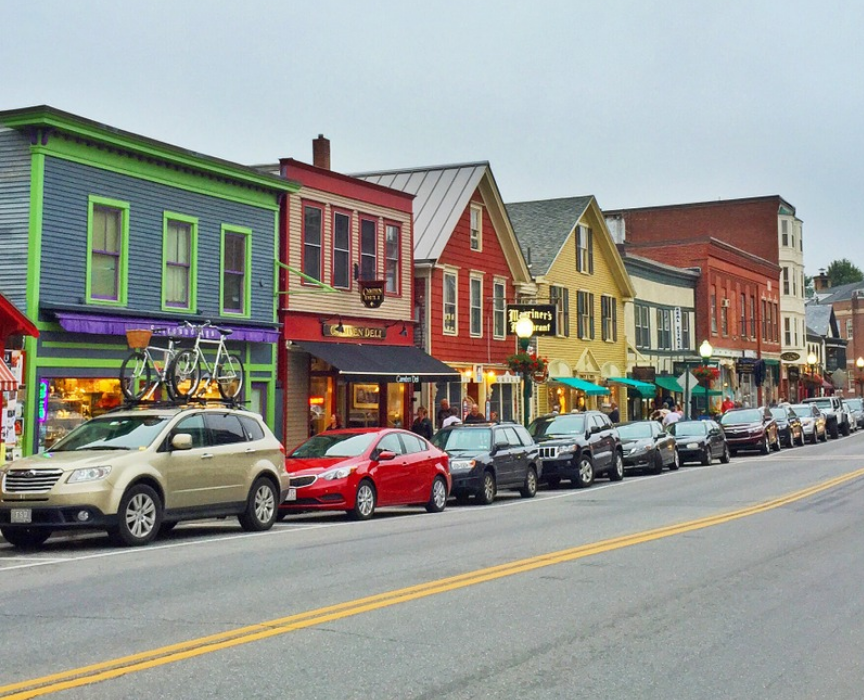

Camden, Maine
Little Ocean Town
I grew up in Camden, which is a little town in mid-coast Maine. It has cute little coffee shops, vintage clothing stores, sailboat tours, beautiful hidden hiking trails, the Camden Snowbowl, and so much more.


Home Page
Psychology at Umaine
People I Love